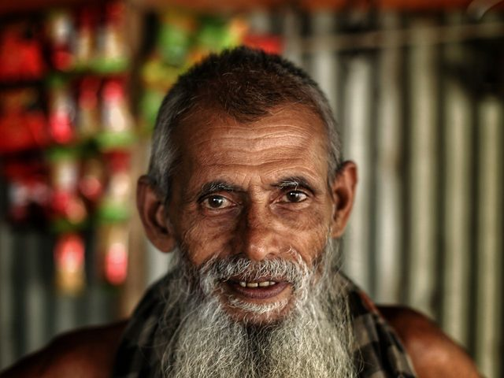
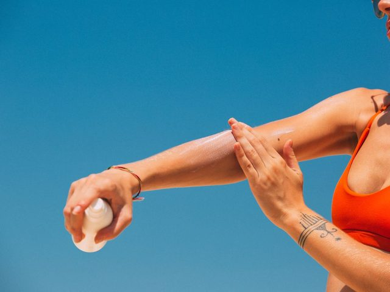
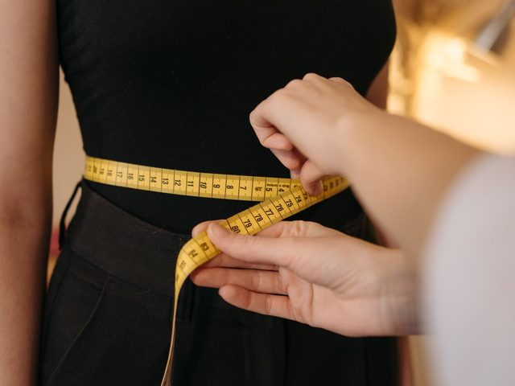
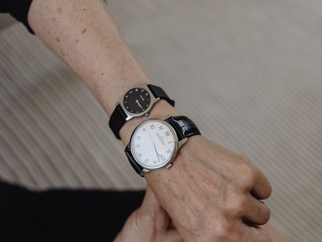

VOCABULARY · 主題 2000 字 PART 2 UNIT 3
Parts of body．身體部位
進階的身體部位，共 10 個：鬍子、下巴、舌頭、腳踝、骨頭、臀部、皮膚、拇指、腰、手腕。
共 10 個單字．點 🔊 聽發音

1beardn.
鬍鬚；山羊鬍
下巴的鬍子；嘴上的叫 mustache
Santa Claus has a long white beard.聖誕老公公有長長的白鬍子。
2chinn.
下巴
Keep your chin up! 別灰心！
He rested his chin on his hand and thought.他用手托著下巴思考。

3tonguen.
舌頭；語言
mother tongue 母語
The dog stuck out its tongue on the hot day.大熱天那隻狗吐著舌頭。
4anklen.
腳踝
twist my ankle 扭到腳踝
I twisted my ankle in P.E. class.我在體育課扭到腳踝。

5bonen.
骨頭
lazybones 懶骨頭（懶人）
The dog is hiding a bone in the yard.那隻狗把骨頭藏在院子裡。

6hipn.
臀部；屁股（髖部）
with hands on hips 雙手叉腰
She stood with her hands on her hips.她雙手叉腰站著。

7skinn.
皮膚；（水果的）皮
banana skin 香蕉皮
Use sunscreen to protect your skin.擦防曬乳保護你的皮膚。
8thumbn.
拇指
thumbs up 比讚（b 不發音）
He gave me a thumbs up after my speech.我演講完，他對我比讚。

9waistn.
腰；腰部
和 waste（浪費）同音
These pants are too big for my waist.這條褲子的腰圍對我來說太大了。

10wristn.
手腕
w 不發音；wristwatch 手錶
She wears a watch on her left wrist.她左手腕戴著一支錶。
FOCUS
不發音的字母
| 單字 | 不發音 |
|---|---|
| thumb | b |
| wrist | w |
| tongue | ue |
拼字時要記得這些不發音的字母。